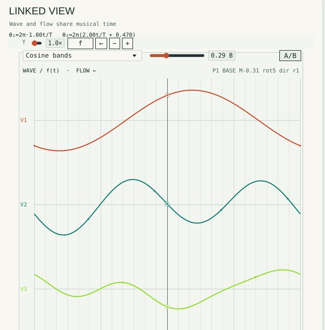
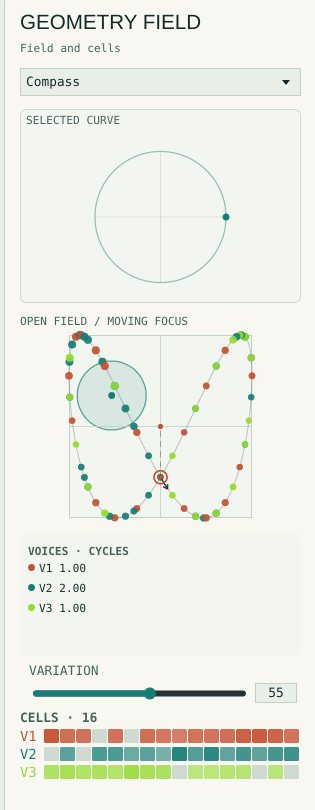
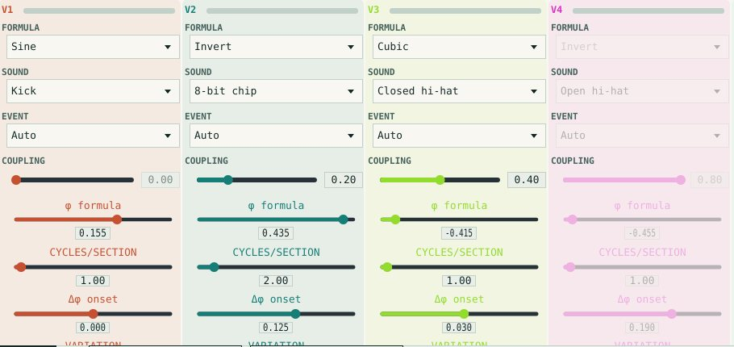
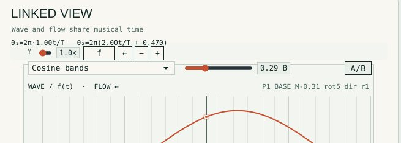

Each dial represents a phase θᵢ(t) = 2π nᵢ t/T + φᵢ. n is the number of turns within section T. The section has 16 beats (four bars in 4/4) and lasts T = 960/BPM seconds. A BPM change during playback applies at the next section. The white point shows the current state; markers show scheduled attacks. In the Mixer, φ formula shifts the curve that calculates each voice's attack intensity; event times stay fixed.
In Study · Shared Cycle, drag an empty part of a voice's ring to shift the whole stem earlier or later; spacing between hits stays the same. Drag a marker to move only that hit. Click an empty spot on the ring to add a hit. Hold Shift while dragging a marker inward or outward to change its strength. Right-click or double-click a marker to remove the hit. Alt-click the ring to disable the stem's cell.

2. Event rules
Center triggers at θ = 0 or π. Extrema triggers at turning points θ = π/2 or 3π/2. The rule changes attack times without changing the drawn oscillation.
3. Surface and geometry
The plane combines x = sin θ₁ and y = sin θ₂. Open field keeps every attack, while a moving focus weights its intensity by distance. Four islands pulse and drift at distinct phases with gentle neighbour influence; temporary bridges add the corridor between nearby islands to the attack field; two microlanes drift and breathe asymmetrically. Each onset is checked against the current field and may sound or become a rest. These are deterministic compositional agents, not a cell simulation. The XY path animates the relation between voices. Geometric source makes y(t) drive V1; Fourier curves affect sound only when selected as that source. Compass, polygons, spiral, Lissajous, rolling curves, cycloid, catenary and billiard provide paths. Area and perimeter are informative; billiard is an event operator, not room reverberation.

4. Acoustic space
Room geometry changes reflection paths and arrival times. An ideal billiard follows a ray: v′=v−2(v·n)n; path length divided by the speed of sound approximates delay, and energy can be reduced at each wall. This is more suitable at high frequencies when wavelength is small compared with the room. At low frequencies, waves interfere and form room modes; a room response needs modes or an impulse response. The current billiard is a compositional event operator, not acoustic reverberation. No room effect is applied to the audio yet.
5. Sound and model
Law I offers eight functions: uniform, projection y, product xy, difference x²−y², central Gaussian, cosine bands, potential energy U and kinetic energy K. For U and K, x and y are normalized displacements of two equal-mass oscillators with frequencies proportional to their section cycles: U=(n₁²x²+n₂²y²)/(n₁²+n₂²), K=1−U. This is an idealized model, not a measurement of acoustic energy. λ blends the selected function with uniform intensity. In the Mixer, Decay shortens modal tails and Fundamental lowers the first mode in harmonic timbres. The global sound material is the default; each channel can inherit it or select an override.
In drum MIDI, V1–V8 are internal roles, not track numbers: V1 kick (GM 35–36); V2 snare, rim and variants (37–40); V3 closed/pedal hi-hat (42/44); V4 open hi-hat (46); V5 toms (41, 43, 45, 47, 48, 50); V6 cymbals (49, 51–53, 55, 57, 59); V7 hand drums (60–66); V8 accessories and other notes. In the GMD corpus with the TD-11 map, 22/26 are hi-hats and 58 is a tom rim. The seed chooses a sound family without changing the voice map; the mask starts in Open Field. To study a beat, import it, solo each stem in the Mixer, and identify pulse, guide and response before comparing timbres. A file's style label is metadata, not proof of stylistic authenticity.

6. Graph zoom
Each voice has its own lane. The arrow button cycles through waves flowing left, flowing right, and a fixed timeline. In flow, the played time stays in the centre while curves move past it. Use + and − or the mouse wheel to zoom down to a one-second window. Dragging a zoomed section returns to the fixed timeline for navigation. This view motion does not change sound. In the Mixer, V2 Motion shifts the second voice's phase per bar and changes its onsets.

7. Scenes and versions
Save creates a session version. Export scene writes a .batruc.txt; Open scene restores it and adds the version to the history. REC chooses a destination and records the stereo master in 24-bit PCM. The button turns red and shows STOP with elapsed time; the default limit is 5 min, adjustable from 1 to 15 min in the adjacent selector. STOP closes WAV and TXT in the background. Successful completion appears in the status area without a modal dialog; write failures are reported. If you pause the transport, that interval is recorded as silence; generated form passages are never wholly silent. Existing files are never replaced. History keeps up to 16 versions in this session.
8. Rhythm counts
With n positions and two states per position — rest or hit — there are 2ⁿ patterns. Choose n to see each subdivision and browse patterns by number or by clicking the cells. At n=4 there are 16 possibilities; n=12 has 4,096. A 4/4 bar uses 16 sixteenths and rolls one of 65,536 combinations. The explorer and audio preview do not alter the composition. Practice hides a pattern for you to hear and rebuild. Path offers five challenges: 4, 6, 8, 12 and 16 positions. Hear each pattern, rebuild it, then advance when correct. Further lessons with musical rhythms and contexts remain to be developed.
Listening sequence: import a MIDI with source, meter and BPM identified; listen by stem and look for timekeeping, guide and response roles; change one layer and compare. GMD Brazilian labels describe drum performances; they do not define traditions. For Maracatu Nação, compare contextual sources and do not treat one baque as universal.
One beat divided into a triplet has n=3 and 2³=8 patterns. A 3/4 bar with triplets in every beat has n=9 and 2⁹=512. The rule remains 2ⁿ; the total number of positions changes.
The bar preset plays 4/4 as 16 sixteenths or 3/4 with triplets as 9 positions across three beats. In the subdivision selector, n positions per beat remain one beat; in the ternary bar, 3 positions per beat repeat across three beats.
9. Bass and Mixer
The seeded bass line starts from voice attacks and the composition seed. The hexadecimal field and New Bass set a separate seed: it changes the pitch contour and phrase choices without changing the source MIDI. Level 0 keeps the anchors; levels 1–3 add counterbeats on free subdivisions when nearby attacks provide a cue. The Mixer has a dedicated BASS strip: Enable switches it on, the slider sets its level, M mutes it, S solos it, and Pan places it in the stereo field. The same controls appear on the Bass page. Editing the piano roll replaces the generated line; New Bass returns to generation.